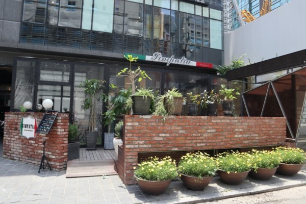
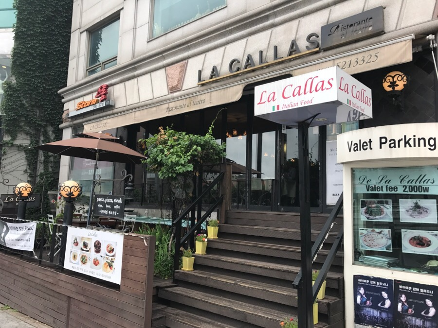
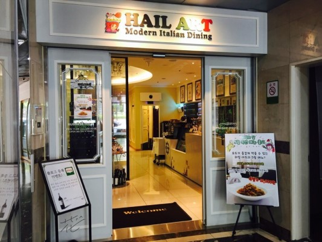

|
오프레
📞010-9081-3837 🚩서울 서초구 반포대로4길 12 🕒 매일 12:00 - 22:00 🍴 런치코스: 63,000원 |
|  |
심빠띠아
📞02-3474-6655 🚩서울 서초구 반포대로16길 30 🕒 평일 11:30 - 22:30 🍴 까르보나라: 17,000원 |
|  |
라칼라스
📞02-521-3325 🚩서울 서초구 반포대로 8 🕒 매일 11:00 - 24:00 🍴 마르게리따 피자: 18,000원 |
|  |
하일아트레스토랑
📞02-3471-1727 🚩서울 서초구 반포대로4길 54 🕒 매일 11:30 - 22:00 🍴 명란 파스타: 18,000원 |